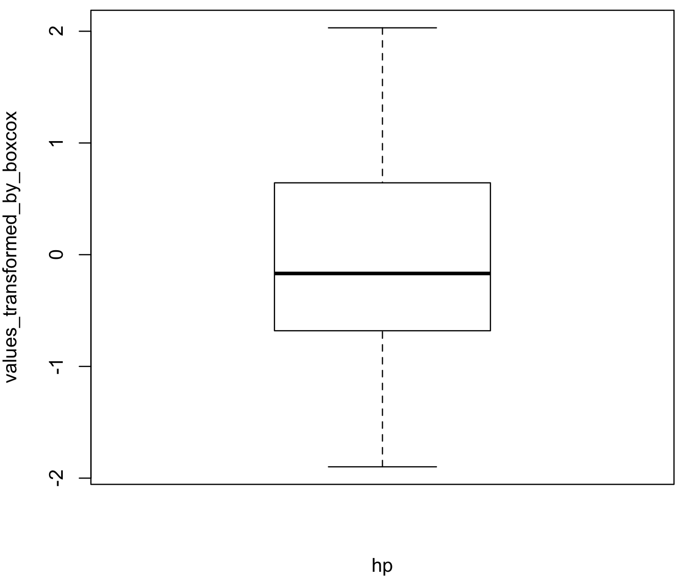

Session 6 – Basic Statistics in R
This workshop is not designed to give you an extensive overview on all statistical methods that can be performed in R. Yet, this computing environment was born to provide a comprehensive platform for the implementation of statistical methods. We will overview of some basic and advanced methods with some illustrative graphs (these will be expanded in the session devoted to graphics). However, you can ask me if you want to explore a specific method that you would me to add to this gitbook.
6.1 Exploring your data
1) To start, we need to import a dataset that we want to explore and analyze.
As graduate students, you are encouraged to use your own datasets (i.e., this is ideal as you will know more about its contents, metrics and intended use). For this exercise, I will use two previously show datasets: (1) the small preloaded mtcars dataset and (2) the large airway_scaledcounts.csv dataset. These datasets are in our class GitHub repository and you can download those to your computer.
## NOTE: remember to update the path to files with the datasets where you downloaded in your computer -- THIS IS EXCLUSIVE TO YOUR COMPUTER AND IT IS NOT THE PATH SHOWN BELOW
#define a working directory
setwd("~/Desktop/Teach_R/class_pages_reference/bioinformatics_gitbook_1/my_working_directory")
#load get mtcars dataset -- this a preloaded dataset in R
cars_data <- mtcars
cars_data
# mpg cyl disp hp drat wt qsec vs am gear carb
#Mazda RX4 21.0 6 160.0 110 3.90 2.620 16.46 0 1 4 4
#Mazda RX4 Wag 21.0 6 160.0 110 3.90 2.875 17.02 0 1 4 4
#Datsun 710 22.8 4 108.0 93 3.85 2.320 18.61 1 1 4 1
#Hornet 4 Drive 21.4 6 258.0 110 3.08 3.215 19.44 1 0 3 1
#...
#load get 'airway_scaledcounts.csv' dataset
airway_data <- read.table("~/Desktop/Teach_R/class_pages_reference/bioinformatics_gitbook_1/my_working_directory/airway_scaledcounts.csv",
header = TRUE, sep = ",", stringsAsFactors = FALSE)
# ensgene SRR1039508 SRR1039509 SRR1039512 SRR1039513 SRR1039516 SRR1039517 SRR1039520 SRR1039521
#1 ENSG00000000003 723 486 904 445 1170 1097 806 604
#2 ENSG00000000005 0 0 0 0 0 0 0 0
#3 ENSG00000000419 467 523 616 371 582 781 417 509
#4 ENSG00000000457 347 258 364 237 318 447 330 324
#5 ENSG00000000460 96 81 73 66 118 94 102 74
#6 ENSG00000000938 0 0 1 0 2 0 0 0
#...2) We can get some basic descriptive parameters of each data set including number of entries, number and names of the columns (i.e., variables), type of variables (e.g., numbers or characters), number of NA values.
For this purpose, the easiest approach is to use the function summary()
summary(cars_data)
# mpg cyl disp hp drat wt qsec vs
# Min. :10.40 Min. :4.000 Min. : 71.1 Min. : 52.0 Min. :2.760 Min. :1.513 Min. :14.50 Min. :0.0000
# 1st Qu.:15.43 1st Qu.:4.000 1st Qu.:120.8 1st Qu.: 96.5 1st Qu.:3.080 1st Qu.:2.581 1st Qu.:16.89 1st Qu.:0.0000
# Median :19.20 Median :6.000 Median :196.3 Median :123.0 Median :3.695 Median :3.325 Median :17.71 Median :0.0000
# Mean :20.09 Mean :6.188 Mean :230.7 Mean :146.7 Mean :3.597 Mean :3.217 Mean :17.85 Mean :0.4375
# 3rd Qu.:22.80 3rd Qu.:8.000 3rd Qu.:326.0 3rd Qu.:180.0 3rd Qu.:3.920 3rd Qu.:3.610 3rd Qu.:18.90 3rd Qu.:1.0000
# Max. :33.90 Max. :8.000 Max. :472.0 Max. :335.0 Max. :4.930 Max. :5.424 Max. :22.90 Max. :1.0000
# am gear carb
# Min. :0.0000 Min. :3.000 Min. :1.000
# 1st Qu.:0.0000 1st Qu.:3.000 1st Qu.:2.000
# Median :0.0000 Median :4.000 Median :2.000
# Mean :0.4062 Mean :3.688 Mean :2.812
# 3rd Qu.:1.0000 3rd Qu.:4.000 3rd Qu.:4.000
# Max. :1.0000 Max. :5.000 Max. :8.000
summary(airway_data)
# ensgene SRR1039508 SRR1039509 SRR1039512 SRR1039513 SRR1039516
# Length:38694 Min. : 0.0 Min. : 0.0 Min. : 0.0 Min. : 0.0 Min. : 0
# Class :character 1st Qu.: 0.0 1st Qu.: 0.0 1st Qu.: 0.0 1st Qu.: 0.0 1st Qu.: 0
# Mode :character Median : 1.0 Median : 1.0 Median : 1.0 Median : 0.0 Median : 1
# Mean : 546.5 Mean : 501.1 Mean : 673.6 Mean : 405.3 Mean : 649
# 3rd Qu.: 203.0 3rd Qu.: 172.0 3rd Qu.: 237.0 3rd Qu.: 128.0 3rd Qu.: 228
# Max. :287372.0 Max. :244921.0 Max. :510107.0 Max. :304818.0 Max. :410979
# SRR1039517 SRR1039520 SRR1039521
# Min. : 0.0 Min. : 0.0 Min. : 0.0
# 1st Qu.: 0.0 1st Qu.: 0.0 1st Qu.: 0.0
# Median : 1.0 Median : 1.0 Median : 1.0
# Mean : 822.5 Mean : 509.0 Mean : 565.7
# 3rd Qu.: 261.0 3rd Qu.: 185.8 3rd Qu.: 183.0
# Max. :416837.0 Max. :378108.0 Max. :372973.0 These summary output provide a general descriptive and summary statistics of data distribution of the values on each column (variable). For continuous variables, minimum and maximum values are provided. Other statistics include mean and median that provide a general measurement of central location (i.e., average). The 1st quartile (Q1) is the middle value between the minimum and the median; and it also represents measurement that marks where 25% of the data is below this point. The 3rd quartile (Q3) is the middle value between the median and the maximum; and also represents 75% of the data is below this point. Notice the column named ensgene is a discrete (character) variable and only provides the number of elements in that column.
We can visualize these summaries using boxplots. The base package has the function boxplot().
#car data boxplot
boxplot(mpg~cyl, data=cars_data, col=(c("#DA291CFF", "#56A8CBFF", "#53A567FF")), main="car data boxplots", xlab="cylinders") 
You can also visualize these summaries using boxplots for all variables using the R-package reshape2 and its function melt(). This will reshape the data frame to be more amenable for boxplots.
# you might need to install R-package 'reshape2'
install.packages("reshape2")
library(reshape2)
# reduce the "airway_data" to only the continuous variables.
airway_data_very_high_low <- airway_data
airway_data_reduced2 <- airway_data[,2:ncol(airway_data_very_high_low)]
head(airway_data_reduced2)
# SRR1039508 SRR1039509 SRR1039512 SRR1039513 SRR1039516 SRR1039517 SRR1039520 SRR1039521
#1 723 486 904 445 1170 1097 806 604
#2 0 0 0 0 0 0 0 0
#3 467 523 616 371 582 781 417 509
#4 347 258 364 237 318 447 330 324
#5 96 81 73 66 118 94 102 74
#6 0 0 1 0 2 0 0 0
airway_data_reduced2_melted <- melt(airway_data_reduced2)
#No id variables; using all as measure variables
# we will change the names of the columns to reflect what they represent.
names(airway_data_reduced2_melted) <- c("sample", "expression")
head(airway_data_reduced2_melted)
# sample expression
#1 SRR1039508 723
#2 SRR1039508 0
#3 SRR1039508 467
#4 SRR1039508 347
#5 SRR1039508 96
#6 SRR1039508 0
#airway_data boxplots
boxplot(expression~sample, data=airway_data_reduced2_melted, main="airway_data boxplots", xlab="samples") 
This figure is not very elegant (we will work with graph in that section). However, these boxplots are extremely skewed to low expression values.
3) We can discretize our data by creating groups based on criterium (e.g., threshold value). Such discrete groups can help us to define if a treatment or condition is reflected in our data or experimental groups. We will create a binary data frame for airway_data for the columns (variables) that represent the normalized gene expression for the samples that start withSRR. For this example, we will consider an arbitrary scale to divide into groups as: very high (x => 10000), high (10000 > x => 100) and low (x < 100) expression levels.
This task can be perform using a specialized R-package: purrr and its function modify() with a conditional ifelse(). We already introduce purrr on previous sessions. Notice that when we close some of the commands we use complex punctuation (i.e., (, ), {, }) and many mistakes can happen if you forget to close such punctuation pairs (i.e., missing one is a very common error)..
# we already installed R-package 'purrr'
library(purrr)
# we create an alternative object, so we original raw data airway_data
airway_data_very_high_low <- airway_data
# We will apply a the conditional
airway_data_very_high_low <- purrr::modify(airway_data_very_high_low,function(x) {ifelse(x >= 10000, "very_high",
ifelse( x >= 1000, "high", "low"))})
head(airway_data_very_high_low)
# ensgene SRR1039508 SRR1039509 SRR1039512 SRR1039513 SRR1039516 SRR1039517 SRR1039520 SRR1039521
#1 very_high low low low low high high low low
#2 very_high low low low low low low low low
#3 very_high low low low low low low low low
#4 very_high low low low low low low low low
#5 very_high low low low low low low low low
#6 very_high low low low low low low low low
#...During the process above, we have “lost” the values of our variable ensgene that contains the names of the loci. We can add it back from our original data frame airway_data as indicated next.
airway_data_very_high_low$ensgene <- airway_data$ensgene
head(airway_data_very_high_low)
# ensgene SRR1039508 SRR1039509 SRR1039512 SRR1039513 SRR1039516 SRR1039517 SRR1039520 SRR1039521
#1 ENSG00000000003 low low low low high high low low
#2 ENSG00000000005 low low low low low low low low
#3 ENSG00000000419 low low low low low low low low
#4 ENSG00000000457 low low low low low low low low
#5 ENSG00000000460 low low low low low low low low
#6 ENSG00000000938 low low low low low low low low
#...4) With this discretized data frame airway_data_very_high_low, we can perform contingency tables. These are a type of table in a matrix format that displays the frequency distribution of the variables tested. We will exclude the first column ensgene because it has unique values.
airway_data_reduced <- airway_data_very_high_low[,2:ncol(airway_data_very_high_low)]
# collect frequencies on samples
summary_frequencies_airway_data <- list()
for(i in 1:ncol(airway_data_reduced)) {
sample_name <- names(airway_data_reduced[i])
one_table <- table(airway_data_reduced[i])
# from table to vector
one_contigency_vector <- as.numeric(one_table)
# add names of categories
names(one_contigency_vector) <- names(one_table)
one_data_frame <- as.data.frame(one_contigency_vector)
# add name of sample
names(one_data_frame) <- sample_name
# collect results in list
summary_frequencies_airway_data[[i]] <- one_data_frame
}
summary_frequencies_airway_data
#[[1]]
# SRR1039508
#high 3732
#low 34691
#very_high 271
#[[2]]
# SRR1039509
#high 3444
#low 34986
#very_high 264
#...With the list summary_frequencies_airway_data, we can cover it to a data frame by binding each vector as a column using two functions do.call() and cbind().
final_summary_all_samples_df <- do.call(cbind, summary_frequencies_airway_data)
final_summary_all_samples_df
# SRR1039508 SRR1039509 SRR1039512 SRR1039513 SRR1039516 SRR1039517 SRR1039520 SRR1039521
#high 3732 3444 4118 2607 4155 4703 3432 3683
#low 34691 34986 34216 35902 34196 33500 35024 34725
#very_high 271 264 360 185 343 491 238 2865) With this data frame, we can test these discretized variables for independence using a chi-squared test with the function summary().
For example, we can compare two of the airway_data_reduced samples (i.e., columns). Notice that I use a ; command at the end of one line of commands, this allows you to paste several commands next to each other as if they were in new lines.
sample_names <- names(airway_data_reduced)[1:2]
title_test <- paste0(sample_names, collapse ="..vs..")
contigency_result <- summary(table(airway_data_reduced[,1], airway_data_reduced[,2]))
cat(title_test, "\n"); print(contigency_result)
#SRR1039508..vs..SRR1039509
#ENumber of cases in table: 38694
#Number of factors: 2
#Test for independence of all factors:
# Chisq = 58193, df = 4, p-value = 0
# Chi-squared approximation may be incorrectThese results indicate that we can conclude that these samples are likely independent, but the large number of cases 38694 might have inflated the Chisq statistic.
Next we have an interesting loop for you to dissect, it will run all pairwise contingency tests, report the process, and add names of the pairs being compared. Notice the iterative variable counter and function break that breaks the loop when it has finished.
counter <- 0
collect_test_independence <- list()
for(i in 1:ncol(airway_data_reduced)) {
# i <- 1
names_sample_i <- names(airway_data_reduced)[i]
n <- i + 1
upper_limit <- ncol(airway_data_reduced)+1
if(n < upper_limit) {
cat("sample:",names_sample_i, "..vs..")
for(j in n:ncol(airway_data_reduced)) {
counter <- counter + 1
names_sample_j <- names(airway_data_reduced)[j]
cat(names_sample_j, "....")
list_name <- paste0(names_sample_i,"..vs..", names_sample_j)
collect_test_independence[[counter]] <- summary(table(airway_data_reduced[,i], airway_data_reduced[,j]))
names(collect_test_independence)[counter] <- list_name
}
cat("\n")
} else {break}
}
#sample: SRR1039508 ..vs..SRR1039509 ....SRR1039512 ....SRR1039513 ....SRR1039516 ....SRR1039517 ....SRR1039520 ....SRR1039521 ....
#sample: SRR1039509 ..vs..SRR1039512 ....SRR1039513 ....SRR1039516 ....SRR1039517 ....SRR1039520 ....SRR1039521 ....
#sample: SRR1039512 ..vs..SRR1039513 ....SRR1039516 ....SRR1039517 ....SRR1039520 ....SRR1039521 ....
#sample: SRR1039513 ..vs..SRR1039516 ....SRR1039517 ....SRR1039520 ....SRR1039521 ....
#sample: SRR1039516 ..vs..SRR1039517 ....SRR1039520 ....SRR1039521 ....
#sample: SRR1039517 ..vs..SRR1039520 ....SRR1039521 ....
#sample: SRR1039520 ..vs..SRR1039521 ....
# if you call the collect_test_independence, you will get the statistics for independence
collect_test_independence
#$SRR1039508..vs..SRR1039509
#Number of cases in table: 38694
#Number of factors: 2
#Test for independence of all factors:
# Chisq = 58193, df = 4, p-value = 0
# Chi-squared approximation may be incorrect
#
#$SRR1039508..vs..SRR1039512
#Number of cases in table: 38694
#Number of factors: 2
#Test for independence of all factors:
# Chisq = 58274, df = 4, p-value = 0
# Chi-squared approximation may be incorrect6.2 Sub-setting your dataset
It is often the case that you do not want to run some analysis with some part and not all your data. This will require that your subset (i.e., select some parts) your data.
We will explore some different forms to subset your data. For that purpose, we will use Cars93 dataset from the R-package MASS.
## we can install MASS and load the dataset for this example
install.packages("MASS")
library(MASS)
## We assign Cars93 dataset to an object
my_cars <- Cars93
str(my_cars)
#'data.frame': 93 obs. of 27 variables:
# $ Manufacturer : Factor w/ 32 levels "Acura","Audi",..: 1 1 2 2 3 4 4 4 4 5 ...
# $ Model : Factor w/ 93 levels "100","190E","240",..: 49 56 9 1 6 24 54 74 73 35 ...
# $ Type : Factor w/ 6 levels "Compact","Large",..: 4 3 1 3 3 3 2 2 3 2 ...
# $ Min.Price : num 12.9 29.2 25.9 30.8 23.7 14.2 19.9 22.6 26.3 33 ...
# $ Price : num 15.9 33.9 29.1 37.7 30 15.7 20.8 23.7 26.3 34.7 ...
# $ Max.Price : num 18.8 38.7 32.3 44.6 36.2 17.3 21.7 24.9 26.3 36.3 ...
# $ MPG.city : int 25 18 20 19 22 22 19 16 19 16 ...
# $ MPG.highway : int 31 25 26 26 30 31 28 25 27 25 ...
# $ AirBags : Factor w/ 3 levels "Driver & Passenger",..: 3 1 2 1 2 2 2 2 2 2 ...
# $ DriveTrain : Factor w/ 3 levels "4WD","Front",..: 2 2 2 2 3 2 2 3 2 2 ...
# $ Cylinders : Factor w/ 6 levels "3","4","5","6",..: 2 4 4 4 2 2 4 4 4 5 ...
# $ EngineSize : num 1.8 3.2 2.8 2.8 3.5 2.2 3.8 5.7 3.8 4.9 ...
# $ Horsepower : int 140 200 172 172 208 110 170 180 170 200 ...
# $ RPM : int 6300 5500 5500 5500 5700 5200 4800 4000 4800 4100 ...
# $ Rev.per.mile : int 2890 2335 2280 2535 2545 2565 1570 1320 1690 1510 ...
# $ Man.trans.avail : Factor w/ 2 levels "No","Yes": 2 2 2 2 2 1 1 1 1 1 ...
# $ Fuel.tank.capacity: num 13.2 18 16.9 21.1 21.1 16.4 18 23 18.8 18 ...
# $ Passengers : int 5 5 5 6 4 6 6 6 5 6 ...
# $ Length : int 177 195 180 193 186 189 200 216 198 206 ...
# $ Wheelbase : int 102 115 102 106 109 105 111 116 108 114 ...
# $ Width : int 68 71 67 70 69 69 74 78 73 73 ...
# $ Turn.circle : int 37 38 37 37 39 41 42 45 41 43 ...
# $ Rear.seat.room : num 26.5 30 28 31 27 28 30.5 30.5 26.5 35 ...
# $ Luggage.room : int 11 15 14 17 13 16 17 21 14 18 ...
# $ Weight : int 2705 3560 3375 3405 3640 2880 3470 4105 3495 3620 ...
# $ Origin : Factor w/ 2 levels "USA","non-USA": 2 2 2 2 2 1 1 1 1 1 ...
# $ Make : Factor w/ 93 levels "Acura Integra",..: 1 2 4 3 5 6 7 9 8 10 ...For example, you might want to include only some variables. We will select Origin, Manufacturer,Price, Passengers, MPG.city, and EngineSize.
For that purpose, we use the function subset() and notice it syntax.
subset_my_cars <- subset(my_cars, select = c(Origin, Manufacturer, Price, Passengers, MPG.city, EngineSize))
head(subset_my_cars)
# Origin Manufacturer Price Passengers MPG.city EngineSize
#1 non-USA Acura 15.9 5 25 1.8
#2 non-USA Acura 33.9 5 18 3.2
#3 non-USA Audi 29.1 5 20 2.8
#4 non-USA Audi 37.7 6 19 2.8
#5 non-USA BMW 30.0 4 22 3.5
#6 USA Buick 15.7 6 22 2.2You might want to include groups based on a character name (i.e., equal to some term). We will select only cars with Origin from the USA.
only_usa_subset_my_cars <- subset(subset_my_cars, Origin == "USA")
head(only_usa_subset_my_cars)
# Origin Manufacturer Price Passengers MPG.city EngineSize
#6 USA Buick 15.7 6 22 2.2
#7 USA Buick 20.8 6 19 3.8
#8 USA Buick 23.7 6 16 5.7
#9 USA Buick 26.3 5 19 3.8
#10 USA Cadillac 34.7 6 16 4.9
#11 USA Cadillac 40.1 5 16 4.6You might want to include groups based on a value. We will select only cars with an EngineSize more or equal to 3.
only_large_engine_subset_my_cars <- subset(subset_my_cars, EngineSize >= 3.0)
head(only_large_engine_subset_my_cars)
# Origin Manufacturer Price Passengers MPG.city EngineSize
#2 non-USA Acura 33.9 5 18 3.2
#5 non-USA BMW 30.0 4 22 3.5
#7 USA Buick 20.8 6 19 3.8
#8 USA Buick 23.7 6 16 5.7
#9 USA Buick 26.3 5 19 3.8
#10 USA Cadillac 34.7 6 16 4.9You might want to combine several considerations. We will select only cars not made in the USA with an EngineSize less or equal to 4.
some_of_my_cars <- subset(subset_my_cars, Origin == "non-USA" & EngineSize <= 4.0)
head(some_of_my_cars)
# Origin Manufacturer Price Passengers MPG.city EngineSize
#1 non-USA Acura 15.9 5 25 1.8
#2 non-USA Acura 33.9 5 18 3.2
#3 non-USA Audi 29.1 5 20 2.8
#4 non-USA Audi 37.7 6 19 2.8
#5 non-USA BMW 30.0 4 22 3.5
#39 non-USA Geo 8.4 4 46 1.06.3 Transposing (rotating) your dataset
Some datasets might have the “wrong” orientation (e.g., individuals as columns and variables as rows). This usually depends on the source data and for most purposes, you migth want your individuals as rows and each column with the variable measurements. We can correct this “wrong” orientation by transposing your data frame or matrix.
Here is an example using deaths dataset from the R-package MASS. This is a time series giving the monthly deaths from bronchitis, emphysema and asthma in the UK, 1974-1979, both sexes (deaths). I retyped the data into a data frame to make it easy to transpose (rotate) this dataset.
## this is time series dataset as a data frame
UK_deaths <- data.frame(year_1974=c(3035,2552,2704,2554,2014,1655,1721,1524,1596,2074,2199,2512),
year_1975 = c(2933,2889,2938,2497,1870,1726,1607,1545,1396,1787,2076,2837),
year_1976 = c(2787,3891,3179,2011,1636,1580,1489,1300,1356,1653,2013,2823),
year_1977 = c(3102,2294,2385,2444,1748,1554,1498,1361,1346,1564,1640,2293),
year_1978 = c(2815,3137,2679,1969,1870,1633,1529,1366,1357,1570,1535,2491),
year_1979 = c(3084,2605,2573,2143,1693,1504,1461,1354,1333,1492,1781,1915), stringsAsFactors = FALSE)
rownames(UK_deaths) <- c("Jan","Feb","Mar","Apr","May","Jun","Jul","Aug","Sep","Oct","Nov","Dec")
## this dataset has months as rows and years as columns
UK_deaths
# year_1974 year_1975 year_1976 year_1977 year_1978 year_1979
# Jan 3035 2933 2787 3102 2815 3084
# Feb 2552 2889 3891 2294 3137 2605
# Mar 2704 2938 3179 2385 2679 2573
# Apr 2554 2497 2011 2444 1969 2143
# May 2014 1870 1636 1748 1870 1693
# Jun 1655 1726 1580 1554 1633 1504
# Jul 1721 1607 1489 1498 1529 1461
# Aug 1524 1545 1300 1361 1366 1354
# Sep 1596 1396 1356 1346 1357 1333
# Oct 2074 1787 1653 1564 1570 1492
# Nov 2199 2076 2013 1640 1535 1781
# Dec 2512 2837 2823 2293 2491 1915
str(UK_deaths)
#'data.frame': 12 obs. of 6 variables:
# $ year_1974: num 3035 2552 2704 2554 2014 ...
# $ year_1975: num 2933 2889 2938 2497 1870 ...
# $ year_1976: num 2787 3891 3179 2011 1636 ...
# $ year_1977: num 3102 2294 2385 2444 1748 ...
# $ year_1978: num 2815 3137 2679 1969 1870 ...
# $ year_1979: num 3084 2605 2573 2143 1693 ..
## we can transpose this UK_deaths to have months as columns
UK_deaths_t <- as.data.frame(t(UK_deaths),stringsAsFactors = FALSE)
class(UK_deaths_t)
#[1] "data.frame"
UK_deaths_t
# Jan Feb Mar Apr May Jun Jul Aug Sep Oct Nov Dec
# year_1974 3035 2552 2704 2554 2014 1655 1721 1524 1596 2074 2199 2512
# year_1975 2933 2889 2938 2497 1870 1726 1607 1545 1396 1787 2076 2837
# year_1976 2787 3891 3179 2011 1636 1580 1489 1300 1356 1653 2013 2823
# year_1977 3102 2294 2385 2444 1748 1554 1498 1361 1346 1564 1640 2293
# year_1978 2815 3137 2679 1969 1870 1633 1529 1366 1357 1570 1535 2491
# year_1979 3084 2605 2573 2143 1693 1504 1461 1354 1333 1492 1781 19156.4 Dealing with missing (NA) values
Most datasets would have some missing values usually coded as NA, <NaN or
We will work with some build and complete datasets. Then, we will introduce missing values.
## the mtcars is comparisons between 32 automobiles (1973–74 models)
my_mtcars <- mtcars
my_mtcars$car_name <- rownames(my_mtcars)
rownames(my_mtcars) <- NULL
my_mtcars
# mpg cyl disp hp drat wt qsec vs am gear carb car_name
# 1 21.0 6 160.0 110 3.90 2.620 16.46 0 1 4 4 Mazda RX4
# 2 21.0 6 160.0 110 3.90 2.875 17.02 0 1 4 4 Mazda RX4 Wag
# 3 22.8 4 108.0 93 3.85 2.320 18.61 1 1 4 1 Datsun 710
# 4 21.4 6 258.0 110 3.08 3.215 19.44 1 0 3 1 Hornet 4 Drive
# 5 18.7 8 360.0 175 3.15 3.440 17.02 0 0 3 2 Hornet Sportabout
# 6 18.1 6 225.0 105 2.76 3.460 20.22 1 0 3 1 Valiant
# 7 14.3 8 360.0 245 3.21 3.570 15.84 0 0 3 4 Duster 360
# 8 24.4 4 146.7 62 3.69 3.190 20.00 1 0 4 2 Merc 240D
# 9 22.8 4 140.8 95 3.92 3.150 22.90 1 0 4 2 Merc 230
# 10 19.2 6 167.6 123 3.92 3.440 18.30 1 0 4 4 Merc 280
# 11 17.8 6 167.6 123 3.92 3.440 18.90 1 0 4 4 Merc 280C
# 12 16.4 8 275.8 180 3.07 4.070 17.40 0 0 3 3 Merc 450SE
# 13 17.3 8 275.8 180 3.07 3.730 17.60 0 0 3 3 Merc 450SL
# 14 15.2 8 275.8 180 3.07 3.780 18.00 0 0 3 3 Merc 450SLC
# 15 10.4 8 472.0 205 2.93 5.250 17.98 0 0 3 4 Cadillac Fleetwood
# 16 10.4 8 460.0 215 3.00 5.424 17.82 0 0 3 4 Lincoln Continental
# 17 14.7 8 440.0 230 3.23 5.345 17.42 0 0 3 4 Chrysler Imperial
# 18 32.4 4 78.7 66 4.08 2.200 19.47 1 1 4 1 Fiat 128
# 19 30.4 4 75.7 52 4.93 1.615 18.52 1 1 4 2 Honda Civic
# 20 33.9 4 71.1 65 4.22 1.835 19.90 1 1 4 1 Toyota Corolla
# 21 21.5 4 120.1 97 3.70 2.465 20.01 1 0 3 1 Toyota Corona
# 22 15.5 8 318.0 150 2.76 3.520 16.87 0 0 3 2 Dodge Challenger
# 23 15.2 8 304.0 150 3.15 3.435 17.30 0 0 3 2 AMC Javelin
# 24 13.3 8 350.0 245 3.73 3.840 15.41 0 0 3 4 Camaro Z28
# 25 19.2 8 400.0 175 3.08 3.845 17.05 0 0 3 2 Pontiac Firebird
# 26 27.3 4 79.0 66 4.08 1.935 18.90 1 1 4 1 Fiat X1-9
# 27 26.0 4 120.3 91 4.43 2.140 16.70 0 1 5 2 Porsche 914-2
# 28 30.4 4 95.1 113 3.77 1.513 16.90 1 1 5 2 Lotus Europa
# 29 15.8 8 351.0 264 4.22 3.170 14.50 0 1 5 4 Ford Pantera L
# 30 19.7 6 145.0 175 3.62 2.770 15.50 0 1 5 6 Ferrari Dino
# 31 15.0 8 301.0 335 3.54 3.570 14.60 0 1 5 8 Maserati Bora
# 32 21.4 4 121.0 109 4.11 2.780 18.60 1 1 4 2 Volvo 142E
## Lets introduce some NA values randomly
my_mtcars_with_NA <- as.data.frame(lapply(my_mtcars, function(x_df) x_df[ sample(c(TRUE, NA), prob = c(0.85, 0.15), size = length(x_df), replace = TRUE) ]))
my_mtcars_with_NA
# mpg cyl disp hp drat wt qsec vs am gear carb car_name
# 1 21.0 6 160.0 110 3.90 2.620 16.46 0 1 4 4 <NA>
# 2 21.0 6 160.0 NA 3.90 2.875 17.02 0 NA 4 NA <NA>
# 3 22.8 4 108.0 93 3.85 2.320 NA NA 1 4 1 Datsun 710
# 4 NA 6 258.0 110 3.08 3.215 NA 1 0 3 1 Hornet 4 Drive
# 5 18.7 8 360.0 175 3.15 3.440 17.02 0 0 3 2 Hornet Sportabout
# 6 18.1 6 225.0 105 2.76 3.460 20.22 1 NA 3 NA Valiant
# 7 14.3 8 360.0 NA 3.21 3.570 NA 0 0 3 NA Duster 360
# 8 24.4 4 146.7 62 NA 3.190 20.00 1 0 4 2 Merc 240D
# 9 22.8 4 NA 95 NA 3.150 22.90 1 0 4 NA Merc 230
# 10 19.2 6 167.6 123 3.92 3.440 18.30 1 0 NA NA <NA>
# 11 17.8 6 167.6 123 3.92 3.440 18.90 1 0 4 NA Merc 280C
# 12 16.4 8 275.8 NA 3.07 4.070 17.40 0 0 3 3 Merc 450SE
# 13 17.3 8 275.8 180 3.07 3.730 17.60 0 0 3 3 Merc 450SL
# 14 15.2 8 NA 180 3.07 3.780 NA 0 0 3 3 <NA>
# 15 10.4 NA 472.0 205 2.93 NA 17.98 0 0 3 4 Cadillac Fleetwood
# 16 10.4 NA 460.0 215 3.00 5.424 17.82 0 NA 3 4 Lincoln Continental
# 17 14.7 8 440.0 NA 3.23 5.345 NA 0 0 3 4 Chrysler Imperial
# 18 32.4 4 78.7 66 NA 2.200 19.47 1 1 NA 1 Fiat 128
# 19 30.4 4 75.7 52 4.93 1.615 18.52 1 1 4 2 Honda Civic
# 20 33.9 4 71.1 NA 4.22 1.835 19.90 NA NA 4 1 Toyota Corolla
# 21 21.5 4 120.1 97 3.70 2.465 20.01 1 0 3 1 Toyota Corona
# 22 15.5 8 318.0 150 2.76 3.520 16.87 0 0 3 2 <NA>
# 23 15.2 8 NA 150 3.15 NA 17.30 0 0 3 2 AMC Javelin
# 24 NA 8 NA 245 3.73 NA 15.41 0 NA 3 4 Camaro Z28
# 25 NA 8 400.0 175 NA 3.845 17.05 0 0 3 2 Pontiac Firebird
# 26 NA 4 79.0 66 4.08 1.935 18.90 1 1 NA 1 Fiat X1-9
# 27 26.0 4 120.3 91 4.43 NA 16.70 0 NA 5 NA Porsche 914-2
# 28 30.4 4 95.1 113 3.77 1.513 16.90 1 1 5 NA Lotus Europa
# 29 15.8 8 351.0 264 4.22 3.170 14.50 0 1 5 4 Ford Pantera L
# 30 NA 6 145.0 175 3.62 NA 15.50 0 1 5 6 <NA>
# 31 15.0 8 301.0 335 3.54 3.570 14.60 0 1 5 8 Maserati Bora
# 32 21.4 4 121.0 109 4.11 2.780 18.60 1 1 NA NA Volvo 142EYou can compare these two datasets and notice several cells with values as NA (if variable is numeric) and
We can remove all rows with at least one NA value using the function complete.cases().
## remove all rows with at least on NA
my_mtcars_complete_rows <- my_mtcars_with_NA[complete.cases(my_mtcars_with_NA), ]
my_mtcars_complete_rows
# mpg cyl disp hp drat wt qsec vs am gear carb car_name
# 5 18.7 8 360.0 175 3.15 3.440 17.02 0 0 3 2 Hornet Sportabout
# 13 17.3 8 275.8 180 3.07 3.730 17.60 0 0 3 3 Merc 450SL
# 19 30.4 4 75.7 52 4.93 1.615 18.52 1 1 4 2 Honda Civic
# 21 21.5 4 120.1 97 3.70 2.465 20.01 1 0 3 1 Toyota Corona
# 29 15.8 8 351.0 264 4.22 3.170 14.50 0 1 5 4 Ford Pantera L
# 31 15.0 8 301.0 335 3.54 3.570 14.60 0 1 5 8 Maserati BoraWe can remove rows with at least one NA value on specific columns using the function complete.cases().
## remove rows with at least one NA in columns "mpg" and "cyl"
my_mtcars_complete_rows_mpg_cyl <- my_mtcars_with_NA[complete.cases(my_mtcars_with_NA[,c("mpg","cyl")]), ]
my_mtcars_complete_rows_mpg_cyl
# mpg cyl disp hp drat wt qsec vs am gear carb car_name
# 1 21.0 6 160.0 110 3.90 2.620 16.46 0 1 4 4 <NA>
# 2 21.0 6 160.0 NA 3.90 2.875 17.02 0 NA 4 NA <NA>
# 3 22.8 4 108.0 93 3.85 2.320 NA NA 1 4 1 Datsun 710
# 5 18.7 8 360.0 175 3.15 3.440 17.02 0 0 3 2 Hornet Sportabout
# 6 18.1 6 225.0 105 2.76 3.460 20.22 1 NA 3 NA Valiant
# 7 14.3 8 360.0 NA 3.21 3.570 NA 0 0 3 NA Duster 360
# 8 24.4 4 146.7 62 NA 3.190 20.00 1 0 4 2 Merc 240D
# 9 22.8 4 NA 95 NA 3.150 22.90 1 0 4 NA Merc 230
# 10 19.2 6 167.6 123 3.92 3.440 18.30 1 0 NA NA <NA>
# 11 17.8 6 167.6 123 3.92 3.440 18.90 1 0 4 NA Merc 280C
# 12 16.4 8 275.8 NA 3.07 4.070 17.40 0 0 3 3 Merc 450SE
# 13 17.3 8 275.8 180 3.07 3.730 17.60 0 0 3 3 Merc 450SL
# 14 15.2 8 NA 180 3.07 3.780 NA 0 0 3 3 <NA>
# 17 14.7 8 440.0 NA 3.23 5.345 NA 0 0 3 4 Chrysler Imperial
# 18 32.4 4 78.7 66 NA 2.200 19.47 1 1 NA 1 Fiat 128
# 19 30.4 4 75.7 52 4.93 1.615 18.52 1 1 4 2 Honda Civic
# 20 33.9 4 71.1 NA 4.22 1.835 19.90 NA NA 4 1 Toyota Corolla
# 21 21.5 4 120.1 97 3.70 2.465 20.01 1 0 3 1 Toyota Corona
# 22 15.5 8 318.0 150 2.76 3.520 16.87 0 0 3 2 <NA>
# 23 15.2 8 NA 150 3.15 NA 17.30 0 0 3 2 AMC Javelin
# 27 26.0 4 120.3 91 4.43 NA 16.70 0 NA 5 NA Porsche 914-2
# 28 30.4 4 95.1 113 3.77 1.513 16.90 1 1 5 NA Lotus Europa
# 29 15.8 8 351.0 264 4.22 3.170 14.50 0 1 5 4 Ford Pantera L
# 31 15.0 8 301.0 335 3.54 3.570 14.60 0 1 5 8 Maserati Bora
# 32 21.4 4 121.0 109 4.11 2.780 18.60 1 1 NA NA Volvo 142ENotice that columns called mpg and cyl have complete values a no missing NA.
You can also replace NA for specific values, for example as zero (0).
## lets get the am variable as a vector
my_NA_am_variable <- my_mtcars_with_NA$am
my_NA_am_variable
#[1] 1 NA 1 0 NA 0 0 0 0 0 0 0 0 0 0 0 0 1 1 NA 0 0 0 0 0 1 1 NA 1 1 1 1
## lets replace NA in the variable am for 0
my_replaced_am_variable <- ifelse(is.na(my_NA_am_variable),0,my_NA_am_variable)
my_replaced_am_variable
# [1] 1 0 1 0 0 0 0 0 0 0 0 0 0 0 0 0 0 1 1 0 0 0 0 0 0 1 1 0 1 1 1 1
## lets put back the compled am variable in our data frame
my_mtcars_with_completed_am <- my_mtcars_with_NA
my_mtcars_with_completed_am$am <- my_replaced_am_variable
my_mtcars_with_completed_am
# mpg cyl disp hp drat wt qsec vs am gear carb car_name
# 1 21.0 6 160.0 110 3.90 2.620 16.46 0 1 4 4 <NA>
# 2 21.0 6 160.0 NA 3.90 2.875 17.02 0 0 4 NA <NA>
# 3 22.8 4 108.0 93 3.85 2.320 NA NA 1 4 1 Datsun 710
# 4 NA 6 258.0 110 3.08 3.215 NA 1 0 3 1 Hornet 4 Drive
# 5 18.7 8 360.0 175 3.15 3.440 17.02 0 0 3 2 Hornet Sportabout
# 6 18.1 6 225.0 105 2.76 3.460 20.22 1 0 3 NA Valiant
# 7 14.3 8 360.0 NA 3.21 3.570 NA 0 0 3 NA Duster 360
# 8 24.4 4 146.7 62 NA 3.190 20.00 1 0 4 2 Merc 240D
# 9 22.8 4 NA 95 NA 3.150 22.90 1 0 4 NA Merc 230
# 10 19.2 6 167.6 123 3.92 3.440 18.30 1 0 NA NA <NA>
# 11 17.8 6 167.6 123 3.92 3.440 18.90 1 0 4 NA Merc 280C
# 12 16.4 8 275.8 NA 3.07 4.070 17.40 0 0 3 3 Merc 450SE
# 13 17.3 8 275.8 180 3.07 3.730 17.60 0 0 3 3 Merc 450SL
# 14 15.2 8 NA 180 3.07 3.780 NA 0 0 3 3 <NA>
# 15 10.4 NA 472.0 205 2.93 NA 17.98 0 0 3 4 Cadillac Fleetwood
# 16 10.4 NA 460.0 215 3.00 5.424 17.82 0 0 3 4 Lincoln Continental
# 17 14.7 8 440.0 NA 3.23 5.345 NA 0 0 3 4 Chrysler Imperial
# 18 32.4 4 78.7 66 NA 2.200 19.47 1 1 NA 1 Fiat 128
# 19 30.4 4 75.7 52 4.93 1.615 18.52 1 1 4 2 Honda Civic
# 20 33.9 4 71.1 NA 4.22 1.835 19.90 NA 0 4 1 Toyota Corolla
# 21 21.5 4 120.1 97 3.70 2.465 20.01 1 0 3 1 Toyota Corona
# 22 15.5 8 318.0 150 2.76 3.520 16.87 0 0 3 2 <NA>
# 23 15.2 8 NA 150 3.15 NA 17.30 0 0 3 2 AMC Javelin
# 24 NA 8 NA 245 3.73 NA 15.41 0 0 3 4 Camaro Z28
# 25 NA 8 400.0 175 NA 3.845 17.05 0 0 3 2 Pontiac Firebird
# 26 NA 4 79.0 66 4.08 1.935 18.90 1 1 NA 1 Fiat X1-9
# 27 26.0 4 120.3 91 4.43 NA 16.70 0 0 5 NA Porsche 914-2
# 28 30.4 4 95.1 113 3.77 1.513 16.90 1 1 5 NA Lotus Europa
# 29 15.8 8 351.0 264 4.22 3.170 14.50 0 1 5 4 Ford Pantera L
# 30 NA 6 145.0 175 3.62 NA 15.50 0 1 5 6 <NA>
# 31 15.0 8 301.0 335 3.54 3.570 14.60 0 1 5 8 Maserati Bora
# 32 21.4 4 121.0 109 4.11 2.780 18.60 1 1 NA NA Volvo 142ENotice that columns called am is now complete with no missing NA.
In some tests or statistics, you can explicitly exclude NA in the calculations using na.rm = TRUE.
## Lets get the mean value of mpg without removing NAs.
mean(my_mtcars_with_NA$mpg)
#[1] NA
## we get an NA and a warning. Now, lets repat with the na.rm = TRUE
mean(my_mtcars_with_NA$mpg,na.rm = TRUE)
#[1] 20.07407You can get the mean of all columns in the data frame.
## We need to remove the discrete variable car_name
my_mtcars_with_NA_2 <- subset(my_mtcars_with_NA, select = !names(my_mtcars_with_NA) %in% "car_name")
head(my_mtcars_with_NA_2)
# mpg cyl disp hp drat wt qsec vs am gear carb
# 1 21.0 6 160 110 3.90 2.620 16.46 0 1 4 4
# 2 21.0 6 160 NA 3.90 2.875 17.02 0 NA 4 NA
# 3 22.8 4 108 93 3.85 2.320 NA NA 1 4 1
# 4 NA 6 258 110 3.08 3.215 NA 1 0 3 1
# 5 18.7 8 360 175 3.15 3.440 17.02 0 0 3 2
# 6 18.1 6 225 105 2.76 3.460 20.22 1 NA 3 NA
## We try to get the mean of all columns and fail
colMeans(my_mtcars_with_NA_2)
# mpg cyl disp hp drat wt qsec vs am gear carb
# NA NA NA NA NA NA NA NA NA NA NA
## We try now by removing NA
colMeans(my_mtcars_with_NA_2,na.rm = TRUE)
# mpg cyl disp hp drat wt qsec vs am gear carb
# 20.0740741 6.0666667 225.4464286 143.1111111 3.5828571 3.1672963 17.8462963 0.4000000 0.3846154 3.6428571 2.8260870 You can do pair t.test() with cars with three classes of cylinders 4 and 6 with values on column mpg
## group of cars with 4 cylinders
mpg_4 <- subset(my_mtcars_with_NA, cyl == 4, select = mpg)
mpg_4
# mpg
#3 22.8
#8 24.4
#9 22.8
#18 32.4
#19 30.4
#20 33.9
#21 21.5
#26 NA
#27 26.0
#28 30.4
#32 21.4
## group of cars with 6 cylinders
mpg_6 <- subset(my_mtcars_with_NA, cyl == 6, select = mpg)
mpg_6
# mpg
#1 21.0
#2 21.0
#4 NA
#6 18.1
#10 19.2
#11 17.8
#30 NA
## We try to do a t.test for pair of groups
t.test(mpg_4, mpg_6, paired = FALSE)
# Welch Two Sample t-test
#
#data: mpg_4 and mpg_6
#t = 4.3493, df = 11.974, p-value = 0.0009507
#alternative hypothesis: true difference in means is not equal to 0
#95 percent confidence interval:
# 3.582259 10.777741
#sample estimates:
#mean of x mean of y
# 26.60 19.42 However, we try a similar wilcox.test() but we fail
## We try the wilcox.test and fail
wilcox.test(mpg_4, mpg_6, paired = FALSE)
# Error in wilcox.test.default(mpg_4, mpg_6, paired = FALSE) :
# 'x' must be numeric
## We need to remove NA
mpg_4_c <- mpg_4[complete.cases(mpg_4),]
mpg_4_c
#[1] 22.8 24.4 22.8 32.4 30.4 33.9 21.5 26.0 30.4 21.4
mpg_6_c <- mpg_6[complete.cases(mpg_6),]
mpg_6_c
#[1] 21.0 21.0 18.1 19.2 17.8
## We can try now again the wilcox.test
wilcox.test(mpg_4_c, mpg_6_c, paired = FALSE,)
# Wilcoxon rank sum test with continuity correction
#
# data: mpg_4_c and mpg_6_c
# W = 50, p-value = 0.002624
# alternative hypothesis: true location shift is not equal to 06.5 About p-values
In most of your statistical tests, you will pay attention to the number associated to a p-value. The general interpretation of p-values is that they represent the probability of getting results similar or as extreme as those for the null hypothesis assuming that this one is correct (e.g., an expected mean value or similar mean values between two groups assuming that they are from the same population). Likewise, p-values measure the probability that an observed differences between groups could have occurred just by random chance.
6.6 How to read p-values
In most cases, small or tiny p-value are of interest as they represent stronger evidence to reject the null hypothesis and opens the possibly for an alternative hypothesis or explanation. In practice, the significance level is stated by the researcher and in advance (e.g., p <0.05 is significant). The research then determines if the observed p-value is safe to reject the null hypothesis. In contrast, a p-value greater than 0.05 means that results do not deviate enough from those expected if the null hypothesis is true and these p-values are considered to be not statistically significant and fail to reject the null hypothesis.
To explore this further, we will use the mtcars dataset.
## the mtcars is comparisons between 32 automobiles (1973–74 models)
my_mtcars <- mtcars
my_mtcars$car_name <- rownames(my_mtcars)
rownames(my_mtcars) <- NULL
## group of cars with 4 cylinders
mpg_4 <- subset(my_mtcars, cyl == 4, select = mpg)
## group of 6 cylinders
mpg_6 <- subset(my_mtcars, cyl == 6, select = mpg)
## We try to do a t.test for pair of groups
t.test(mpg_4, mpg_6, paired = FALSE)
# Welch Two Sample t-test
#
# data: mpg_4 and mpg_6
# t = 4.7191, df = 12.956, p-value = 0.0004048
# alternative hypothesis: true difference in means is not equal to 0
# 95 percent confidence interval:
# 3.751376 10.090182
# sample estimates:
# mean of x mean of y
# 26.66364 19.74286 In this exercise, what does a p-value = 0.0004048 mean? This value indicates that if the null hypothesis tested were indeed true (i.e., the mean mpg for cars with 4 and 6 cylinders is equal), there would be a 4.048 in 10,000 chance of observing results at least as extreme were both groups will have the same mpg. This leads the researcher to reject the null hypothesis because either an extreme rare data result has been observed, or the null hypothesis is likely to be incorrect.
6.7 Multiple testing corrections
Consider that in many instances, we can perform multiple tests and obtain a collection of p-values. We can apply a multiple testing correction to adjust p-values obtained to correct for occurrence of false positives. These false positives are significant p-values that should be considered not informative and due by chance (i.e., you could do 100 tests, and some might be significant just by the larger number of tests performed).
In bioinformatics, it is common to perform hundreds of statistical testes (e.g., t-tests or ANOVAs) when you are comparing genetic results such as to find differentially expressed genes between a control and an experimental (study) group after the application of a treatment. The incidence of these genes falsely called as differentially expressed is proportional to the number of tests performed and the threshold p-value for significance (critical significance level).
We can illustrate this by assuming that we perform a t-test between two groups using the results derived from comparisons of gene expression between both. In this case, the probability by which the tests will be considered significantly (i.e., evidence of differential gene expression) is expressed by the p-value. We could use the standard threshold of p-value = 0.05, which signifies we have a 5% probability to find a significant differentially expressed gene by chance alone (i.e., not the result of treatment). Furthermore, if we tested 10,000 genes then 5% or 500 genes that might be called significant as differentially express by chance alone.
| Number of genes tested | False positives | Probability of 1 or more false positives |
|---|---|---|
| 1 | 5/100 | 5% |
| 2 | 10/100 | 9.75% |
| 20 | 1 | 64.15% |
| 100 | 5 | 99.41% |
| 1000 | 50 | >99.9% |
| 10000 | 500 | >99.9% |
If that is the case, it is advised to correct the p-values using a multiple testing correction such as the false discovery rate (FDR) estimation.
This can be easily applied in R and usually require a vector containing the p-value and the function p.adjust(). I usually use these FDR corrections if >5 tests are being calculated.
## we create a vector of p-values
x <- rnorm(50, mean = c(rep(0, 25), rep(3, 25)))
p <- 2*pnorm(sort(-abs(x)))
p <- round(p, 5)
p
#[1] 0.00000 0.00000 0.00002 0.00006 0.00019 0.00033 0.00033 0.00053 0.00131 0.00293 0.00348 0.00385 0.00412 0.01391 0.01479 0.01651 0.04093 0.04185
#[19] 0.04283 0.06150 0.07324 0.07789 0.08126 0.09249 0.11938 0.13048 0.14542 0.15769 0.15990 0.19556 0.22030 0.22422 0.25180 0.25683 0.28846 0.31366
#[37] 0.37433 0.40006 0.43389 0.51984 0.54879 0.55692 0.55747 0.66131 0.71076 0.71821 0.72748 0.88428 0.90186 0.92672
## how many are significant
p_less_0_05 <- p[p<0.05]
length(p_less_0_05)
#[1] 19
## we adjust these p-values
p.adjust<- p.adjust(p)
p.adjust
# [1] 0.00000 0.00000 0.00096 0.00282 0.00874 0.01485 0.01485 0.02279 0.05502 0.12013 0.13920 0.15015 0.15656 0.51467 0.53244 0.57785 1.00000 1.00000
#[19] 1.00000 1.00000 1.00000 1.00000 1.00000 1.00000 1.00000 1.00000 1.00000 1.00000 1.00000 1.00000 1.00000 1.00000 1.00000 1.00000 1.00000 1.00000
#[37] 1.00000 1.00000 1.00000 1.00000 1.00000 1.00000 1.00000 1.00000 1.00000 1.00000 1.00000 1.00000 1.00000 1.00000
## how many are significant
p.adjust_less_0_05 <- p.adjust[p.adjust<0.05]
length(p.adjust_less_0_05)
#[1] 8Notice how the values in the p.adjust has increased. If not correction is applied 19 p-values of 50 are significant (~38% of all), but after correction only 8 p-values of 50 are significant (~16% of all).
6.8 Normalizing your data
6) Normalizing or scaling your data is sometimes useful when you are trying to compare datasets that might have extremely different units (e.g., tiny fractions and others in the hundreds of thousands). This can be done with the function scale().
head(cars_data)
# mpg cyl disp hp drat wt qsec vs am gear carb
#Mazda RX4 21.0 6 160 110 3.90 2.620 16.46 0 1 4 4
#Mazda RX4 Wag 21.0 6 160 110 3.90 2.875 17.02 0 1 4 4
#Datsun 710 22.8 4 108 93 3.85 2.320 18.61 1 1 4 1
#Hornet 4 Drive 21.4 6 258 110 3.08 3.215 19.44 1 0 3 1
#Hornet Sportabout 18.7 8 360 175 3.15 3.440 17.02 0 0 3 2
#Valiant 18.1 6 225 105 2.76 3.460 20.22 1 0 3 1
cars_data_scaled <- purrr::modify(cars_data, scale)
# head(cars_data_scaled)
# mpg cyl disp hp drat wt qsec vs am gear carb
#Mazda RX4 0.1508848 -0.1049878 -0.57061982 -0.5350928 0.5675137 -0.610399567 -0.7771651 -0.8680278 1.1899014 0.4235542 0.7352031
#Mazda RX4 Wag 0.1508848 -0.1049878 -0.57061982 -0.5350928 0.5675137 -0.349785269 -0.4637808 -0.8680278 1.1899014 0.4235542 0.7352031
#Datsun 710 0.4495434 -1.2248578 -0.99018209 -0.7830405 0.4739996 -0.917004624 0.4260068 1.1160357 1.1899014 0.4235542 -1.1221521
#Hornet 4 Drive 0.2172534 -0.1049878 0.22009369 -0.5350928 -0.9661175 -0.002299538 0.8904872 1.1160357 -0.8141431 -0.9318192 -1.1221521
#Hornet Sportabout -0.2307345 1.0148821 1.04308123 0.4129422 -0.8351978 0.227654255 -0.4637808 -0.8680278 -0.8141431 -0.9318192 -0.5030337
#Valiant -0.3302874 -0.1049878 -0.04616698 -0.6080186 -1.5646078 0.248094592 1.3269868 1.1160357 -0.8141431 -0.9318192 -1.1221521NOTICE if you use purrr::modify, make sure that the data frame has ONLY continuous variables (no character variables, logicals, factors).
7) Common statistical tests are parametric and most of them assume that your data has a normal (Gaussian) distribution, i.e., a typical bell-shaped curve. In other words, the distribution of values of variable that has a normal distribution will produce values (as they are being measured) with an equal chance to fall above and below the mean value of all measurements. The normal distribution is expected to have very close values for its mean (average of all values), median (mid-point value at the center of the distribution) and mode (the most frequent value). If a distribution is not normal, these three parameters will differ and the distribution is considered skewed (i.e., not normal).
# Create a sequence of numbers between 0 and 100 by 1
x <- seq(0, 100, by = 1)
# Choose the mean as 50 and standard deviation as 17.5
y <- dnorm(x, mean = 50, sd = 17.5)
# Plot this distribution
plot(x,y)
8) We can test for normal (Gaussian) distribution of our data using a normality test. We can use the Shapiro-Wilk’s test that determines if the null hypothesis (i.e., the sample has normal distribution) versus the alternative that it does not. If the test is significant, the distribution has a non-normal distribution. This test is sensitive to sample size, which means that large samples most often do not pass normality tests (i.e., show to be significant). Therefore, it’s important that you use visual inspection of your data distribution before you decide to transform your data.
The Shapiro-Wilk’s test is a build-in function and can be call as shapiro.test(). However, this test cannot be applied to large vectors (i.e., > 5000 entries).
# we can perfome in a variable of a data frame applying it as vector
shapiro.test(cars_data$hp)
# Shapiro-Wilk normality test
#
#data: cars_data$hp
#W = 0.93342, p-value = 0.04881
shapiro.test(cars_data$qsec)
# Shapiro-Wilk normality test
#
#data: cars_data$qsec
#W = 0.97325, p-value = 0.5935Based on these results, we can conclude that the variable hp has not normal distribution, while qsec has normal one. If you want to apply the shapiro.test() to all you variables in your data frame use apply with 2 argument for columns.
apply(cars_data,2,shapiro.test)NOTICE the Shapiro-Wilk’s test is ONLY to test if your data is normally distributed, nothing else!!!.
9) In most cases, you might like to apply a transformation to your data before you apply a parametric statistical test. One of the most frequent transformations for continuous data is to normalize them, this means that change the distribution of the data to a quasinormal or normal one. Such transformations will make our data more amenable for parametric tests. However, the interpretation of the results has to be framed using the units of the transformed data (i.e., if log-transformed, you have to interpret in log-transformed unit).
To determine how if your data need to be normalized, it is a good idea to visualize its distribution. To exemplify this, we will describe this using the hp variable of the car_data.
hp_vector <- cars_data$hp
hp_vector
#[1] 110 110 93 110 175 105 245 62 95 123 123 180 180 180 205 215 230 66 52 65 97 150 150 245 175 66 91 113 264 175 335 109
# we test for normality
shapiro.test(hp_vector)
# Shapiro-Wilk normality test
#
#data: cars_data$hp
#W = 0.93342, p-value = 0.04881
boxplot(hp_vector, xlab = "hp", ylab = "values") In this boxplot, we can see an outlier and it is skewed towards lower values of
In this boxplot, we can see an outlier and it is skewed towards lower values of hp. Some of the most common transformations are to square root the data using the function sqrt() and to perform logarithms using log10() with base 10 or natural logarithms ‘log()’.
hp_vector_sqrt <- sqrt(hp_vector)
shapiro.test(hp_vector_sqrt)
#Shapiro-Wilk normality test
#
#data: hp_vector_sqrt
#W = 0.96456, p-value = 0.3642
hp_vector_log10 <- log10(hp_vector)
shapiro.test(hp_vector_log10)
# Shapiro-Wilk normality test
#
#data: hp_vector_log10
#W = 0.97026, p-value = 0.5065
boxplot(hp_vector_log10, xlab = "hp", ylab = "values_transformed_by_log10")Here is the resulting boxplot afterlog10() transformation.

In some extreme cases, there are several R-packages that can help you to transform your data to have a normal distribution. One of these is bestNormalize and its function boxcox(). This provides a Box-Cox power transformation that can be useful for extremely skewed distributions. Likewise, this function returns, by default, transformed values that are also centered and scaled.
# if you need to install the R-package bestNormalize
install.packages("bestNormalize")
# load library
library(bestNormalize)
# perform Box-Cox power tranformation.
hp_vector_boxcox_list <- bestNormalize::boxcox(hp_vector)
hp_vector_boxcox_list
#Standardized Box Cox Transformation with 32 nonmissing obs.:
# Estimated statistics:
# - lambda = 0.0940865
# - mean (before standardization) = 6.21272
# - sd (before standardization) = 0.7515468
str(hp_vector_boxcox_list)
#List of 8
# $ x.t : num [1:32] -0.401 -0.401 -0.745 -0.401 0.582 ...
#$ x : num [1:32] 110 110 93 110 175 105 245 62 95 123 ...
#$ mean : num 6.21
#$ sd : num 0.752
#$ lambda : num 0.0941
#$ n : int 32
#$ norm_stat : num 1.4
#$ standardize: logi TRUE
#- attr(*, "class")= chr [1:2] "boxcox" "list"
hp_vector_boxcox <- hp_vector_boxcox_list$x.t
#(1] -0.4005863 -0.4005863 -0.7454816 -0.4005863 0.5821478 -0.4967035 1.3216259 -1.5563448 -0.7020701 -0.1680641 -0.1680641 0.6431660 0.6431660 0.6431660 0.9269679
#[16] 1.0317736 1.1809841 -1.4333227 -1.8985905 -1.4634315 -0.6594788 0.2511055 0.2511055 1.3216259 0.5821478 -1.4333227 -0.7897473 -0.3447992 1.4889763 0.5821478
#[31] 2.0305623 -0.4194885
boxplot(hp_vector_boxcox, xlab = "hp", ylab = "values_transformed_by_boxcox")
6.9 What test should I use?
The task of choosing the best statistical analyses given your dataset are one of the most important steps for any biological research. Your choice of methods depends on your understanding of your dataset and these include the following: (a) the number of dependent or outcome variables; (b) the number of your independent or predictor variables; (c) the characteristics of your dependent and independent variables, namely whether they are continuous (interval or ratio) variables (e.g., temperature, growth area, enzyme activity, dose amount, reaction rate, concentration, weight, length); (d) they are ordinal variables where order matters but differences between adjacent categories do not necessarily have the same meaning such as in treatment response (“low”, ”middle”, ”high”) or location (“understory”, “canopy”); (e) they are categorical variables if the categories that do not have a natural order or ranking such in colors (e.g., red, blue, green), populations (e.g., A, B, C, D); and (f) the type of distribution of the variables (it is normally distributed so parametric methods could be applied or not).
The table of statistical choices has been modified form here.
| Dependents (Number) | Dependents (Type) | Independents (Number) | Independents (Type) | Test | Section |
|---|---|---|---|---|---|
| 1 & one population | continuous (normal) | N/A | N/A | one-sample t-test | 6.4 |
| 1 & two populations | continuous (normal) | N/A | N/A | two-sample t-test | 6.4 |
| 1 & one population | continuous (non-normal); ordinal | N/A | N/A | one-sample median or Wilcoxon signed rank test | 6.5 |
| 1 & two populations | continuous (non-normal); ordinal | N/A | N/A | two-sample median or Wilcoxon signed rank test | 6.5 |
| 1 & one population | categorical (2 categories) | N/A | N/A | binomial test | 6.6 |
| 1 & one population | categorical (multiple categories) | N/A | N/A | Chi-square goodness-of-fit | 6.7 |
| 1 & two populations | categorical (multiple categories) compare agreements | N/A | N/A | Chi-square goodness-of-fit | 6.7 |
| 1 & two populations | categorical (multiple categories) | N/A | N/A | Fisher’s exact test | 6.9 |
| 1 & one population | continuous (normal) | 1 | continuous (normal) | correlation | 6.10 |
| bootstraps | 6.11 | ||||
| 1 & one population | continuous (normal) | 1 | continuous (normal) | simple linear regression | 7.1 |
| 1 & one population | continuous (normal) | many | continuous (normal) | multiple linear regression | 7.1 |
| 1 & one population | ordinal | 1 | continuous or ordinal | simple logistic regression | 7.3 |
| 1 & one population | continuous | 1 | continuous or ordinal | non-parametric correlation | 7.4 |
| 1 & one population | continuous (normal) | 1 | categorical (2 or more categories) | one-way ANOVA | 7.7 |
| 1 & one population | continuous (non-normal); ordinal | 1 | categorical (2 or more categories) | one-way ANOVA | 7.7 |
| 1 & one population | continuous (normal) | 2 | categorical (2 or more categories) | two-way ANOVA | 7.8 |
Here is another chart about selecting a statistial test for your project. The original source is in here.

6.10 Type of variables in dataset
You need to determine what type of variables do you have in your dataset. This is crucial if you want to use the correct test in the table above. It is very common that students fail to explore their data and plan to
force a test on their data without knowing (i.e., exploring!!!) if the variables in your dataset are continuous, discrete,
categorical, and binomial. We can easily check variable type by checking the data structure with str function.
## we can check the structure of car dataset by loading get mtcars dataset -- this a preloaded dataset in R
cars_data <- mtcars
## we add the car brand as a variable brand.
cars_data$brand <- rownames(cars_data)
## get the type of variable
str(cars_data)
#'data.frame': 32 obs. of 12 variables:
# $ mpg : num 21 21 22.8 21.4 18.7 18.1 14.3 24.4 22.8 19.2 ...
# $ cyl : num 6 6 4 6 8 6 8 4 4 6 ...
# $ disp : num 160 160 108 258 360 ...
# $ hp : num 110 110 93 110 175 105 245 62 95 123 ...
# $ drat : num 3.9 3.9 3.85 3.08 3.15 2.76 3.21 3.69 3.92 3.92 ...
# $ wt : num 2.62 2.88 2.32 3.21 3.44 ...
# $ qsec : num 16.5 17 18.6 19.4 17 ...
# $ vs : num 0 0 1 1 0 1 0 1 1 1 ...
# $ am : num 1 1 1 0 0 0 0 0 0 0 ...
# $ gear : num 4 4 4 3 3 3 3 4 4 4 ...
# $ carb : num 4 4 1 1 2 1 4 2 2 4 ...
# $ brand: chr "Mazda RX4" "Mazda RX4 Wag" "Datsun 710" "Hornet 4 Drive" ...
## we can a linear regreassion with mpg as dependent and disp, hp and wt as predictors
example_regression <- lm(mpg ~ disp + hp + wt, data = cars_data)
summary(example_regression)
# Call:
# lm(formula = mpg ~ disp + hp + wt, data = cars_data)
#
# Residuals:
# Min 1Q Median 3Q Max
# -3.891 -1.640 -0.172 1.061 5.861
#
# Coefficients:
# Estimate Std. Error t value Pr(>|t|)
# (Intercept) 37.105505 2.110815 17.579 < 2e-16 ***
# disp -0.000937 0.010350 -0.091 0.92851
# hp -0.031157 0.011436 -2.724 0.01097 *
# wt -3.800891 1.066191 -3.565 0.00133 **
# ---
# Signif. codes: 0 ‘***’ 0.001 ‘**’ 0.01 ‘*’ 0.05 ‘.’ 0.1 ‘ ’ 1
#
# Residual standard error: 2.639 on 28 degrees of freedom
# Multiple R-squared: 0.8268, Adjusted R-squared: 0.8083
# F-statistic: 44.57 on 3 and 28 DF, p-value: 8.65e-11
## we found taht hp and wt are good predictors of mpg. See regressions for more details on this test.We can see that this dataset has 12 variables, 11 of those are continuous as num and only one named brand is a discrete variable indicated as chr.
We can now test another type of datasets from the R-package MASS.
# we can install MASS and load the dataset for this example
install.packages("MASS")
library(MASS)
# Let's explore the Aids2 dataset
Aids2_raw <- Aids2
str(Aids2_raw)
#'data.frame': 2843 obs. of 7 variables:
# $ state : Factor w/ 4 levels "NSW","Other",..: 1 1 1 1 1 1 1 1 1 1 ...
# $ sex : Factor w/ 2 levels "F","M": 2 2 2 2 2 2 2 2 2 2 ...
# $ diag : int 10905 11029 9551 9577 10015 9971 10746 10042 10464 10439 ...
# $ death : int 11081 11096 9983 9654 10290 10344 11135 11069 10956 10873 ...
# $ status : Factor w/ 2 levels "A","D": 2 2 2 2 2 2 2 2 2 2 ...
# $ T.categ: Factor w/ 8 levels "hs","hsid","id",..: 1 1 1 5 1 1 8 1 1 2 ...
# $ age : int 35 53 42 44 39 36 36 31 26 27 ..
# we can get the corresponding information for each with ?
?Aids2We can see 7 variables, 3 are continuous as int (for integer) including two that are
not very useful as dates including diag and death. The variable age corresponds to age at diagnosis.
Two variables could be binary and also coded as factors with 2-levels including sex (i.e., male or female)
and status (i.e., alive or dead). Two are categorical such as state (i.e., four states in Australia) and
T.categ has 8 categories for reported transmission category.
We can do some exploration and even a t-test for the continuous variable
## we can get the summary of the age category
summary(Aids2_raw$age)
# Min. 1st Qu. Median Mean 3rd Qu. Max.
# 0.00 30.00 37.00 37.41 43.00 82.00
## we can test if 35 years is the mean of age of diagnosis of this population
t.test(Aids2_raw$age, mu = 35)
# One Sample t-test
#
# data: Aids2_raw$age
# t = 12.764, df = 2842, p-value < 2.2e-16
# alternative hypothesis: true mean is not equal to 35
# 95 percent confidence interval:
# 37.03901 37.77914
# sample estimates:
# mean of x
# 37.40907
## we rejected the hypothesis that the age mean value of diagnosis is 35. See t-test for more details on this test.We can continue our exploration and test if males and females are equally diagnosed with AIDS.
## we can get the summary of the sex category
summary(Aids2_raw$sex)
# F M
# 89 2754
## we need to convert it first to a numeric vector and then to a table
sex_as_numeric <- as.numeric(Aids2_raw$sex)
class(sex_as_numeric)
#[1] "numeric"
sex_as_table <- table(sex_as_numeric)
names(sex_as_table) <- c("female","male")
sex_as_table
#female male
# 89 2754
## we can test if males and females are equally infected (50/50).
chisq.test(sex_as_table, p = c(1/2, 1/2))
#
# Chi-squared test for given probabilities
#
# data: sex_as_table
# X-squared = 2498.1, df = 1, p-value < 2.2e-16
## we rejected the hypothesis that the both males and females are affected in the same proportion (i.e., 1/2 and 1/2). See Chi-squared test for more details.6.11 Comparing means: t-test
9) We can perform one sample t-test on vectors using the function t.test(). For this test, you can test if its mean is statistically different from a given value specified by the mu argument equal such value.
# we will test the mean of sample SRR1039508 equal to mu = 546.5 for
names(cars_data)[7]
[1] "qsec"
t.test(cars_data$qsec, mu = 11)
#
# One Sample t-test
#
#data: cars_data$qsec
#t = 21.681, df = 31, p-value < 2.2e-16
#alternative hypothesis: true mean is not equal to 11
#95 percent confidence interval:
# 17.20449 18.49301
#sample estimates:
#mean of x
#17.84875
# we will test the mean of sample SRR1039508 equal to mu = 546.5 for
names(airway_data)[2]
#[1] "SRR1039508"
t.test(airway_data[,2], mu = 546.5)
#
# One Sample t-test
#
#data: airway_data[, 2]
#t = -0.00053579, df = 38693, p-value = 0.9996
#alternative hypothesis: true mean is not equal to 546.5
#95 percent confidence interval:
# 501.7696 591.2060
#sample estimates:
#mean of x
# 546.4878 These result indicate that the mean of qsec from the cars_data is statically different form 11, while the mean for sample SRR1039508 from the airway_data is not different from the value 546.6 (this value was derived from the summary see 2)). One sample t-test does not assume that the population is normally distributed. However, it is better to have a normalized distribution in our data when we apply parametric test like this one.
The output of the function t.test() also provides 95% confidence interval of the mean value. In these examples, qsec has a mean 17.84875 with 95CI (17.20449, 18.49301) and the SRR1039508 sample mean is 546.4878 with 95CI (501.7696, 591.2060). Our interpretation is that the true value for the mean of the measurements of each of these variables is in the proposed range with a 95% confidence level.
6.12 Two sample t-test
10) For two samples, we can also perform t-tests with two vectors using the same function t.test(). In this case, you are testing if two samples each from different populations (e.g., control and experimental) have the same mean. If the test is significant, you can conclude that the difference might derive from a treatment (as long as you have controlled for other causal agents). These t-tests can be consider as paired (i.e., argument paired = TRUE) or unpaired (i.e., argument paired = FALSE). For paired, the t-test will compare the means of the same group under two separate conditions. In contrast, an unpaired t-test compares the means of two independent groups. In an unpaired t-test, the variance between groups is assumed to be equal.
We will test this for airway_data data that have several samples from the same group the argument paired = TRUE.
names_pairs <- names(airway_data)[2:3]
names_pairs <- paste0(names_pairs, collapse = "..vs..")
#[1] "SRR1039508..vs..SRR1039509"
out_put_ttest_paired <- t.test(airway_data[,2], airway_data[,3], paired = TRUE)
cat(names_pairs); print(out_put_ttest_paired)
#SRR1039508..vs..SRR1039509
# Paired t-test
#
#data: airway_data[, 2] and airway_data[, 3]
#t = 6.9876, df = 38693, p-value = 2.842e-12
#alternative hypothesis: true difference in means is not equal to 0
#95 percent confidence interval:
# 32.66123 58.12758
#sample estimates:
#mean of the differences
# 45.3944 The above results suggest that there is strong difference between these two samples of the same group.
Now, we will also consider the case of unpaired for comparison.
out_put_ttest_unpaired <- t.test(airway_data[,2], airway_data[,3], paired = FALSE)
cat(names_pairs); print(out_put_ttest_unpaired)
#SRR1039508..vs..SRR1039509
# Welch Two Sample t-test
#
#data: airway_data[, 2] and airway_data[, 3]
#t = 1.5108, df = 75614, p-value = 0.1309
#alternative hypothesis: true difference in means is not equal to 0
#95 percent confidence interval:
# -13.49803 104.28683
#sample estimates:
#mean of x mean of y
# 546.4878 501.0934 In this case, the result is the opposite and there is no evidence of a difference in the mean values if these samples were considered of different groups.
Note that a careful determination of what parametrization of the t-test is determined by your experimental group and other considerations. Likewise, a t-test is invalid for small samples from non-normal distributions, but it is valid for large samples from non-normal distributions (like our example above with >30,000 entries). These considerations are beyond this bioinformatics workshop and are the topic of a biostatistics course.
6.13 Beyond t-test: Wilcoxon signed rank test
11) Alternatives to the parametric t-test exist, one of the most common is the one/two-sample median test or the Wilcoxon signed rank test. This test is used to compare two unpaired and paired samples or repeated measurements on a single sample to assess whether their population mean ranks differ.
The Wilcoxon signed rank test is implemented with the function wilcox.test() in a similar fashion as is in a t.test().
# test for mean of sample
wilcox.test(airway_data[,2], mu = 546.5)
#
# Wilcoxon signed rank test with continuity correction
#
#data: airway_data[, 2]
#V = 145919557, p-value < 2.2e-16
#alternative hypothesis: true location is not equal to 546.5
# test for two samples of different group
wilcox.test(airway_data[,2], airway_data[,3], paired = FALSE)
#
# Wilcoxon rank sum test with continuity correction
#
#data: airway_data[, 2] and airway_data[, 3]
#W = 753579582, p-value = 0.08979
#alternative hypothesis: true location shift is not equal to 0
# test for two samples of same group, paired-test
wilcox.test(airway_data[,2], airway_data[,3], paired = TRUE)
#
# Wilcoxon signed rank test with continuity correction
#
#data: airway_data[, 2] and airway_data[, 3]
#V = 147963112, p-value < 2.2e-16
#alternative hypothesis: true location shift is not equal to 06.14 Beyond t-test: Binomial test
12) The binomial test will determine the significance of deviations from expected distribution of observations into two groups of categorical variable. One common use of this test is when an experiment has two possible outcomes (i.e. success/failure) and you have an expectation (i.e., probability) success. For example, if you flip fair coin you have expectation of 50/50 chance of heads of tail every flip. You can apply a binomial test to a population with two categories using the function prop.test().
For example, we can test if the number of females in a population is p = 0.51 (i.e., the chance of being female is 51%). We will use function rbinom() to create such population of 1000 individuals.
## we create a binomial variable assigned to males of females.
## we assume that if female is 1 and 0 if male
one_population <- rbinom(n = 1000, size = 1, prob= 0.51)
str(one_population)
#int [1:1000] 0 0 0 0 1 0 1 0 0 1 ...
## you can tabulate the data in your one_population to visualize that the data follows
## roughly the predicted proportion of 0-state (0.49 or 49%) and 1-state (0.51 or 51%)
table(one_population)
#one_population
# 0 1
#487 513
## we can perform the bionomial test
prop.test(sum(one_population), length(one_population), p = 0.51)
#
# 1-sample proportions test with continuity correction
#
#data: sum(one_population) out of length(one_population), null probability 0.51
#X-squared = 0.04902, df = 1, p-value = 0.8248
#alternative hypothesis: true p is not equal to 0.51
#95 percent confidence interval:
# 0.4745504 0.5374029
#sample estimates:
# p
#0.506 In the case above, we found a non-significant result p-value = 0.8248 and this population is likely to have 51% chance of females. However, less create a biased population towards males.
## we create a binomial variable assigned to males of females.
## we assume that if female is 1 and 0 if male
other_population <- rbinom(n = 1000, size = 1, prob= 0.40)
str(other_population)
#int [1:1000] 0 0 0 0 1 1 0 1 0 0 ...
## you can tabulate the data in your one_population to visualize that the data follows
## roughly the predicted proportion of 0-state (0.60 or 60%) and 1-state (0.40 or 40%)
table(other_population)
#other_population
# 0 1
#603 397
## we can perform the binomial test
prop.test(sum(other_population), length(other_population), p = 0.51)
#
# 1-sample proportions test with continuity correction
#
#data: sum(other_population) out of length(other_population), null probability 0.51
#X-squared = 45.387, df = 1, p-value = 1.617e-11
#alternative hypothesis: true p is not equal to 0.51
#95 percent confidence interval:
# 0.3725342 0.4342204
#sample estimates:
# p
#0.403In the case above, we found a significant result p-value = 1.617e-11 and this population unlikely has 51% chance of females.
6.15 Beyond t-test: Chi-square goodness of fit
13) The Chi-square goodness of fit test* will determine the significance of deviations from expected probabilities of multiple categories in a population. For example, you might want to compare the observed distribution of categories of a population to an expected distribution of such categories. We will perform this test using a table object with multiple categories with the function chisq.test() and an argument of probabilities for each category p.
For example, we can test if the proportion of nitrogen fixing bacteria in a population collected of dataset rhizobium from R package ade4.
## load rhizobium dataset from ade4 R package
library(ade4)
data(rhizobium)
rhizobium_pop <- as.character(rhizobium$pop)
str(rhizobium_pop)
#chr [1:215] "FTmdc" "FTmdc" "FTmdc" "FTmdc" "FTmdc" "FTmdc" "FTmdc" "FTmdc" "FTmdc" "FTmdc" "FTmdc" "FTmdc" "FTmdc" ...
## get a idea of the unique character elements in the rhizobium_pop object
unique(rhizobium_pop)
#[1] "FTmdc" "FTmlt" "TETmdc" "THLmlt" "TELmlt" "TETmlt" "THTmlt"
#we can see 7 unique text elements
## create a table object
rhizobium_pop_table <- table(rhizobium_pop)
rhizobium_pop_table
#rhizobium_pop
# FTmdc FTmlt TELmlt TETmdc TETmlt THLmlt THTmlt
# 46 43 20 20 24 20 42
## we have 7 categories. We will assume that they should be in equal proportion (i.e., 1/7 each).
chisq.test(rhizobium_pop_table, p = c(1/7, 1/7, 1/7, 1/7, 1/7, 1/7, 1/7))
#
# Chi-squared test for given probabilities
#
#data: rhizobium_pop_table
#X-squared = 29.349, df = 6, p-value = 5.225e-0514) You can also cross tabulate results of two measurements of population that result in two or more categories for each and determine if they are related using a Chi-square goodness of fit test. The goal is to create a contingency table where your compare the outcomes for two different measurements of the same population and determine if they tend to be in agreement or not.
## we can have a population and determine a categorical variable that result in two category (0, 1) like for example: healthy and sick
sample_population <- rbinom(n = 100, size = 1, prob= 0.40)
population_states <- ifelse(sample_population == 1, "sick", "healthy")
names(sample_population) <- population_states
head(sample_population)
# healthy sick healthy healthy healthy healthy
# 0 1 0 0 0 0
## we can have the same population and determine a different categorical variable that result in two categories (0, 1) like for example: with_virus and no_infected
sample_virus <- rbinom(n = 100, size = 1, prob= 0.40)
virus_names <- ifelse(sample_virus == 1, "with_virus", "no_infected")
names(sample_virus) <- virus_names
head(sample_virus)
# no_infected no_infected no_infected no_infected with_virus no_infected
# 0 0 0 0 1 0 We cross-tabulate these results and it is important to understand this table. The outcomes for sample_population and sample_virus are 0 1 as indicated in the first row and column. The agreements are when the outcomes of both experiments are the same as each experiment was executed 0-0 and 1-1. All others are disagreements (e.g., 0-1, 1-0).
cross_tab <- table(sample_population, sample_virus)
cross_tab
# sample_virus
#sample_population 0 1
# 0 44 13
# 1 35 8We can now estimate if such agreements and disagreements are different using Chi-squared Test for Count Data with the function chisq.test().
chisq.test(cross_tab)
#
# Pearson's Chi-squared test with Yates' continuity correction
#
# data: cross_tab
# X-squared = 0.069082, df = 1, p-value = 0.7927In this case, we found that they were non-significant different. In this case, if the sick people might not have this made-up virus.
Here is another example, in this case we will make people that are sick more likely to have a virus.test
#$ we construct a data frame
sample_virus_2 <- data.frame (population_1_if_sick = c(0,0,0,1,1,1,1,1,0,1,1),
virus_1_if_detected = c(0,0,0,1,1,1,1,0,0,1,1), stringsAsFactors = FALSE)
sample_virus_2
# population_1_if_sick virus_1_if_detected
#1 0 0
#2 0 0
#3 0 0
#4 1 1
#5 1 1
#6 1 1
#7 1 1
#8 1 0
#9 0 0
#10 1 1
#11 1 1
## we save to numeric vectors
population_1_if_sick <- sample_virus_2$population_1_if_sick
virus_1_if_detected <- sample_virus_2$virus_1_if_detected
## we do a crosstabulation
cross_tab2 <- table(population_1_if_sick, virus_1_if_detected)
cross_tab2
# virus_1_if_detected
#population_1_if_sick 0 1
# 0 4 0
# 1 1 6
## we perform the chisq.test
chisq.test(cross_tab2)
# Pearson's Chi-squared test with Yates' continuity correction
#
# data: cross_tab2
# X-squared = 4.4818, df = 1, p-value = 0.03426
#
# Warning message:
# In chisq.test(cross_tab2) : Chi-squared approximation may be incorrectWe found that people sick most likely have the virus and this is significant.
6.16 Beyond t-test: McNemar’s test
15) This is a similar test to the Chi-square goodness of fit and it is used with paired nominal data in 2 × 2 contingency tables derived from dichotomous trait (i.e., YES or NO; Present or Absent), with matched pairs of subjects, to determine whether the row and column marginal frequencies are equal (see here).
## we can use the same cross tabulation example
cross_tab <- table(sample_population, sample_virus)
cross_tab
# sample_virus
#sample_population 0 1
# 0 44 13
# 1 35 8
## we apply the McNemar's test
mcnemar.test(cross_tab)
#
# McNemar's Chi-squared test with continuity correction
#
# data: cross_tab
# McNemar's chi-squared = 9.1875, df = 1, p-value = 0.002437In this case, we found that the same result as the Chi-squared test and McNemar-s test was also non-significant. In this case, if the sick people might not have this made-up virus.
6.17 Beyond t-test: Fisher’s exact test
16) This is a similar test to the Chi-square goodness of fit and can be used with populations with small samples. The Fisher’s exact test will examine the significance of the association (contingency) between the two kinds of classification. The null hypothesis is that both classifications are dependent. We can use the same dataset as above with the function fisher.test().
fisher.test(cross_tab)
#
# Fisher's Exact Test for Count Data
#
# data: cross_tab
# p-value = 0.8047
# alternative hypothesis: true odds ratio is not equal to 1
# 95 percent confidence interval:
# 0.2488368 2.2877938
# sample estimates:
# odds ratio
# 0.7755955 In this case, we found that they were barely significant different. In this case, if the sick people might not have this made-up virus.
6.18 Correlations
17) We can determine correlation between two variables using cor() and test for its significance using cor.test(). Correlation is the dependence or association between variables, and it usually refers to the degree to which a pair of variables are linearly related. For practical uses, correlations can provide a predictive relationship that can derived from one variable on the other. However, the evidence of correlation does not mean a causal relationship (i.e., A does not necessarily cause B). Likewise, it is important to determine if such correlations are significant and these can be performed for normal or non-normal distributions (in this case use the use argument method = "spearman").
We will determine a correlation and test for its significance between two samples of the airway_data.
cor(airway_data[,2], airway_data[,3])
#[1] 0.9646265
# we will assume that these are not normal
cor.test(airway_data[,2], airway_data[,3], method = "spearman")
#
# Spearman's rank correlation rho
#
#data: airway_data[, 2] and airway_data[, 3]
#S = 4.8345e+11, p-value < 2.2e-16
#alternative hypothesis: true rho is not equal to 0
#sample estimates:
# rho
#0.9499302 6.19 Comparing distributions
18) We can also determine if two variables come from the same distribution using Kolmogorov-Smirnov test ks.test(). The data does not require to be normal.
We will determine if two samples of the airway_data have the same distribution.
ks.test(airway_data[,2], airway_data[,3])
#
# Two-sample Kolmogorov-Smirnov test
#
#data: airway_data[, 2] and airway_data[, 3]
#D = 0.013413, p-value = 0.001896
#alternative hypothesis: two-sided
#
#Warning message:
#In ks.test(airway_data[, 2], airway_data[, 3]) :
# p-value will be approximate in the presence of tiesWe can conclude that these two samples do not have the same distribution (i.e., p-value = 0.001896).
19) We can compare two groups that have some individuals in such groups being exposed treatment versus control using
from the R-package pROC using the functions roc() and roc.test().
This test will compare the AUC (area under the curve) of two ROC (receiver operating characteristic) curves.
These are graphical plots useful in the diagnostic of a binary classifier (e.g., “control-0” or “exposed-1”) as its discrimination threshold is varied (i.e., what is the cutoff to consider a measurement as “exposed-1”).
We will illustrate this test using two airway_data by assigning “control” and “exposed” to sample of rows.
# you need to instal the package "pROC"
install.packages("pROC")
library(pROC)We can prepare two samples of airway_data and assign some of elements of each as “control” and “exposed”.
## set two samples
sample_SRR1039508 <- airway_data$SRR1039508
sample_SRR1039509 <- airway_data$SRR1039509
## get summaries of each
summary_SRR1039508 <- summary(sample_SRR1039508)
summary_SRR1039508
# Min. 1st Qu. Median Mean 3rd Qu. Max.
# 0.0 0.0 1.0 546.5 203.0 287372.0
summary_SRR1039509 <- summary(sample_SRR1039509)
summary_SRR1039509
# Min. 1st Qu. Median Mean 3rd Qu. Max.
# 0.0 0.0 1.0 501.1 172.0 244921.0
## assign "control" if less than 3rd quartile of each
SRR1039508_binary <- ifelse(sample_SRR1039508 > summary_SRR1039508[5], "exposed", "control")
## assign "control" if more than 3rd quartile of each -- a reverse from last sample
SRR1039509_binary <- ifelse(sample_SRR1039509 > summary_SRR1039509[5], "control", "exposed")
## create a roc object for each sample
roc_SRR1039508 <- roc(SRR1039508_binary, sample_SRR1039508, direction = "<")
#Setting levels: control = control, case = exposed
roc_SRR1039509 <- roc(SRR1039509_binary, sample_SRR1039509, direction = "<")
#Setting levels: control = control, case = exposed
## perform the roc.test and increase boot.n for a more precise p-value:
roc.test(roc_SRR1039508, roc_SRR1039509, method="bootstrap", boot.n=1000)
# |=========================================================================================================================================================================| 100%
#
# Bootstrap test for two ROC curves
#
#data: roc_SRR1039508 and roc_SRR1039509
#D = Inf, boot.n = 1000, boot.stratified = 1, p-value < 2.2e-16
#alternative hypothesis: true difference in AUC is not equal to 0
#sample estimates:
#AUC of roc1 AUC of roc2
# 1 0 We can conclude that for SRR1039508 and SRR1039509 are different in their distribution in reference to outcomes for “control” versus “exposed”.
6.20 Bootstraps
This is a non-parametric method of repeated resampling from collection of data with replacement. With enough sampling repetitions (usually in thousands), we can estimate the distribution of a parameter(s) of a population where an original data collection can be used a source for resampling. The rational is that with enough repeat sampling from this population of data, we likely obtain a distribution of values for a parameter (e.g., means, correlations, etc.) that we want to estimate from the population being studied. Repeated sampling allows to account for the uncertainty that resulted from a single or few samples. We calculate from this collection of samples a statistic of interest (e.g., mean) and with enough repetitions the shape of the distribution of the estimates of the statistic would be “bell shaped” (i.e., have Gaussian distribution), which makes possible to construct a confidence interval of our statistic.
Bootstrap can be done in R and it requires to have a source collection (usually large) of data from our population of interest that will serve to draw the bootstrap samples. We will define how many samples with replacement will be drawn (e.g., >1000), with a given sample size (i.e., how many elements are drawn during each sample usually). From each sample, we will estimate a parameter of interest (e.g., a mean) and collect those to calculate of distribution where its mean (expected value for the statistic) and standard deviation (a measure of the uncertainty about that value of the statistic) can be used to estimate a confidence interval of such statistic.
We need to install the R-package boot.
install.packages('boot')
library(boot)We will use the mtcars to illustrate the estimate of mean and correlation between some of the variables.
#load get mtcars dataset -- this a preloaded dataset in R
cars_data <- mtcars
cars_data
# mpg cyl disp hp drat wt qsec vs am gear carb
#Mazda RX4 21.0 6 160.0 110 3.90 2.620 16.46 0 1 4 4
#Mazda RX4 Wag 21.0 6 160.0 110 3.90 2.875 17.02 0 1 4 4
#Datsun 710 22.8 4 108.0 93 3.85 2.320 18.61 1 1 4 1
#Hornet 4 Drive 21.4 6 258.0 110 3.08 3.215 19.44 1 0 3 1
#Hornet Sportabout 18.7 8 360.0 175 3.15 3.440 17.02 0 0 3 2
#..We can estimate the mean of the mpg variable
mpg_mean <- mean(cars_data$mpg)
mpg_mean
#1] 20.09062We can now use boot to calculate how confident we are on the mean estimates
## First, we need a function that calculate a mean for each sample
function_mean <- function(data, i){
my_data2 <- data[i,]
return(mean(my_data2$mpg))
}
# The arguments of this function are data or the source dataset
# and [i] is the vector index of which rows from the source dataset will be draw to build a bootstrap sample.
## Second, we can run our bootstrap with 100000 bootstrap replicates
bootstrap_mpg_mean <- boot(data = cars_data, statistic = function_mean, R = 10000)
bootstrap_mpg_mean
#ORDINARY NONPARAMETRIC BOOTSTRAP
#
#Call:
#boot(data = cars_data, statistic = function_mean, R = 10000)
#
#Bootstrap Statistics :
# original bias std. error
#t1* 20.09062 0.002242188 1.053944
bootstrap_mpg_mean$t0
#[1] 20.09062
head(bootstrap_mpg_mean$t)
# [,1]
#[1,] 20.16562
#[2,] 20.05937
#[3,] 20.42188
#[4,] 20.45000
#[5,] 20.48125
#[6,] 21.81875
#...
dim(bootstrap_mpg_mean$t)
#[1] 10000 1
mean(bootstrap_mpg_mean$t)
#[1] 20.09287
range(bootstrap_mpg_mean$t)
#[1] 15.7375 24.3375
sd(bootstrap_mpg_mean$t)
#[1] 1.053944
boot.ci(boot.out=bootstrap_mpg_mean,type="norm")
#BOOTSTRAP CONFIDENCE INTERVAL CALCULATIONS
#Based on 10000 bootstrap replicates
#
#CALL :
#boot.ci(boot.out = bootstrap_mpg_mean, type = "norm")
#
#Intervals :
#Level Normal
#95% (18.02, 22.15 )
#Calculations and Intervals on Original Scale
hist(bootstrap_mpg_mean$t, breaks=100, col="dodgerblue1", main="Bootstrap Distribution of the Mean: mpg")
lines(x = density(x = bootstrap_mpg_mean$t))
abline(v = mean(bootstrap_mpg_mean$t), col = "black", lwd = 2)
The results are as follows: t0 are the values of the statistic (i.e., mean) in original dataset,
t is a matrix of 10000 rows (i.e., number of bootstrap repetitions) that we use to draw our estimate of the mean.
The original mean value is 20.09062 and the bootstrap estimate of the mean is
very close at 20.09287, with a 95% CI between 18.02 and 22.15. Therefore, it is some variability
in the original sample for mpg.
Now, we can try another more complex analysis. For example, the correlation between disp and wt.
## null estimate of correlation
cor(cars_data$disp, cars_data$wt)
#[1] 0.8879799
## First, we need a function that calculate correlation for each sample
function_correlation <- function(data, i){
my_data2 <- data[i,]
return(cor(my_data2$disp, my_data2$wt))
}
## Second, we can run our bootstrap with 100000 bootstrap replicates
bootstrap_cor_dis_and_wt <- boot(data = cars_data, statistic = function_correlation, R = 10000)
bootstrap_cor_dis_and_wt
#ORDINARY NONPARAMETRIC BOOTSTRAP
#
#Call:
#boot(data = cars_data, statistic = function_correlation, R = 10000)
#
#Bootstrap Statistics :
# original bias std. error
#t1* 0.8879799 -0.003775209 0.03749136
bootstrap_cor_dis_and_wt$t0
#[1] 0.8879799
head(bootstrap_cor_dis_and_wt$t)
# [,1]
#[1,] 0.8612517
#[2,] 0.7704631
#[3,] 0.9229136
#[4,] 0.8536788
#[5,] 0.8677477
#[6,] 0.8298354
#...
dim(bootstrap_cor_dis_and_wt$t)
#[1] 10000 1
mean(bootstrap_cor_dis_and_wt$t)
#[1] 0.8842047
range(bootstrap_cor_dis_and_wt$t)
#[1] 0.6994762 0.9806787
sd(bootstrap_cor_dis_and_wt$t)
#[1] 0.03749136
boot.ci(boot.out=bootstrap_cor_dis_and_wt,type="norm")
#BOOTSTRAP CONFIDENCE INTERVAL CALCULATIONS
#Based on 10000 bootstrap replicates
#
#CALL :
#boot.ci(boot.out = bootstrap_cor_dis_and_wt, type = "norm")
#
#Intervals :
#Level Normal
#95% ( 0.8183, 0.9652 )
#Calculations and Intervals on Original Scale
hist(bootstrap_cor_dis_and_wt$t, breaks=100, col="firebrick2", main="Bootstrap Distribution of the Correlation: dis vs wt")
lines(x = density(x = bootstrap_cor_dis_and_wt$t))
abline(v = mean(bootstrap_cor_dis_and_wt$t), col = "black", lwd = 2)
The results are as follows: t0 are the values of the statistic (i.e., correlation) in original dataset,
t is a matrix of 10000 rows (i.e., number of bootstrap repetitions) that we use to draw our estimate of this correlation.
The original mean value is 0.8879799 and the bootstrap estimate of the mean is
very close at 0.8842047, with a 95% CI between 0.8183 and 0.9652. Therefore,
disp and wt are strongly and positively correlated.